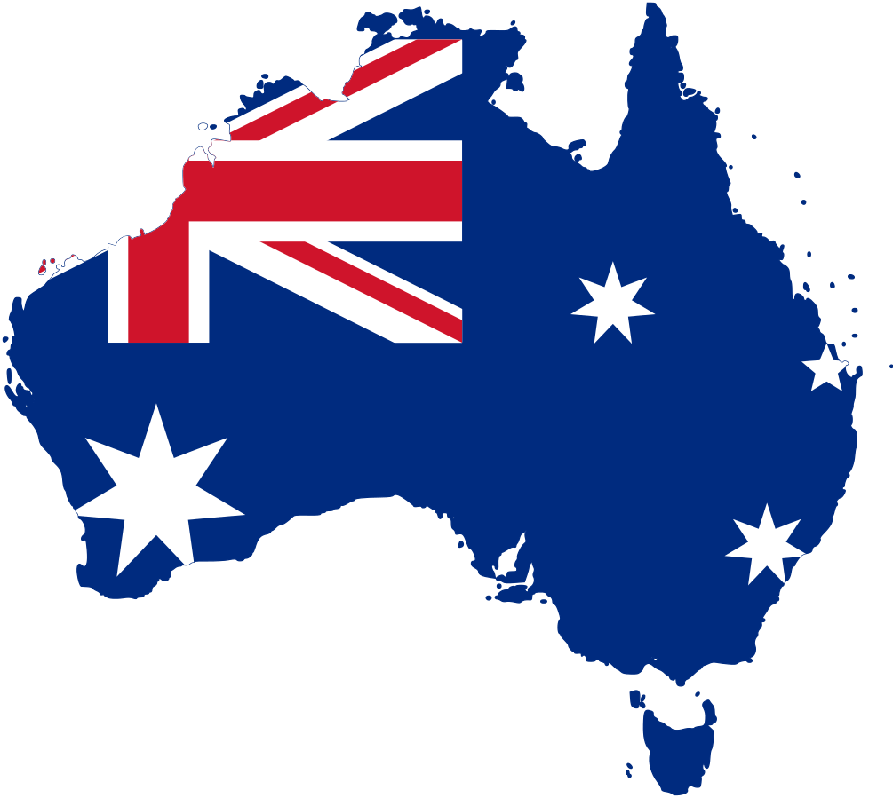
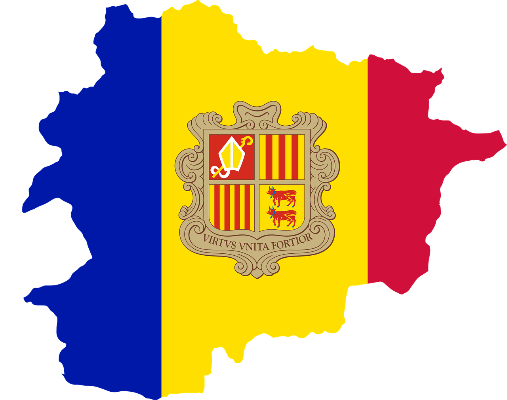
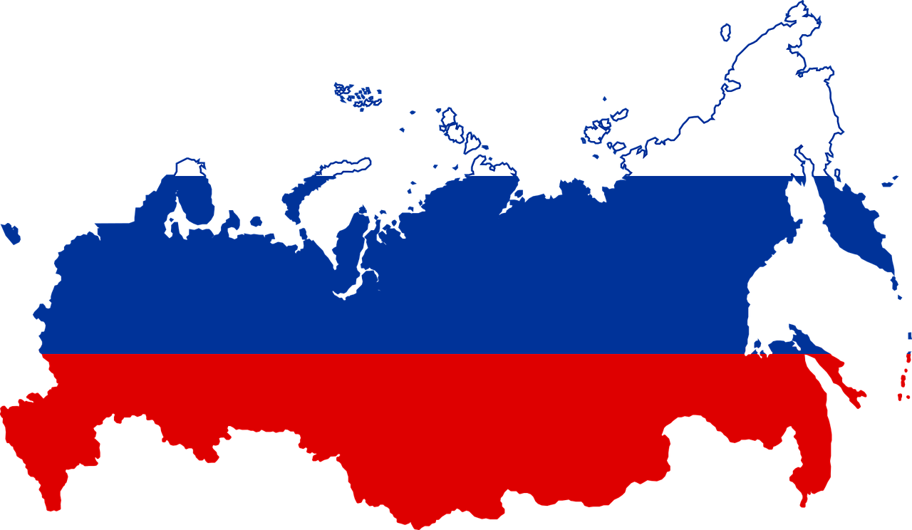
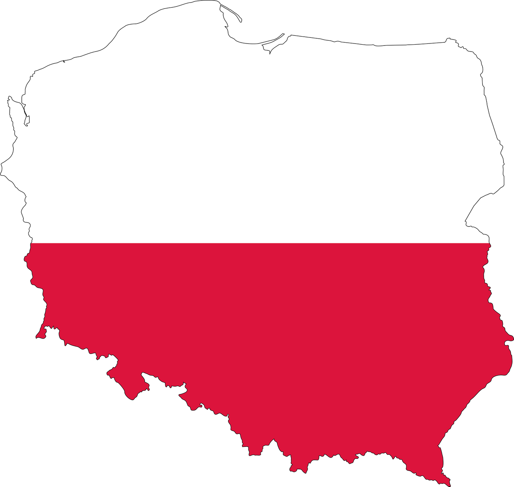

YUPIIIIII. Has llegado al último nivel, si aciertas la pregunta llegarás a la Tierra pero si la fallas, no podrás volver hasta la siguiente oportunidad.
suerte :)
GEOGRAFIA
Esta captial está situada en el continente de Oceanía.
¿De cual de estos paises es capital Camberra?



